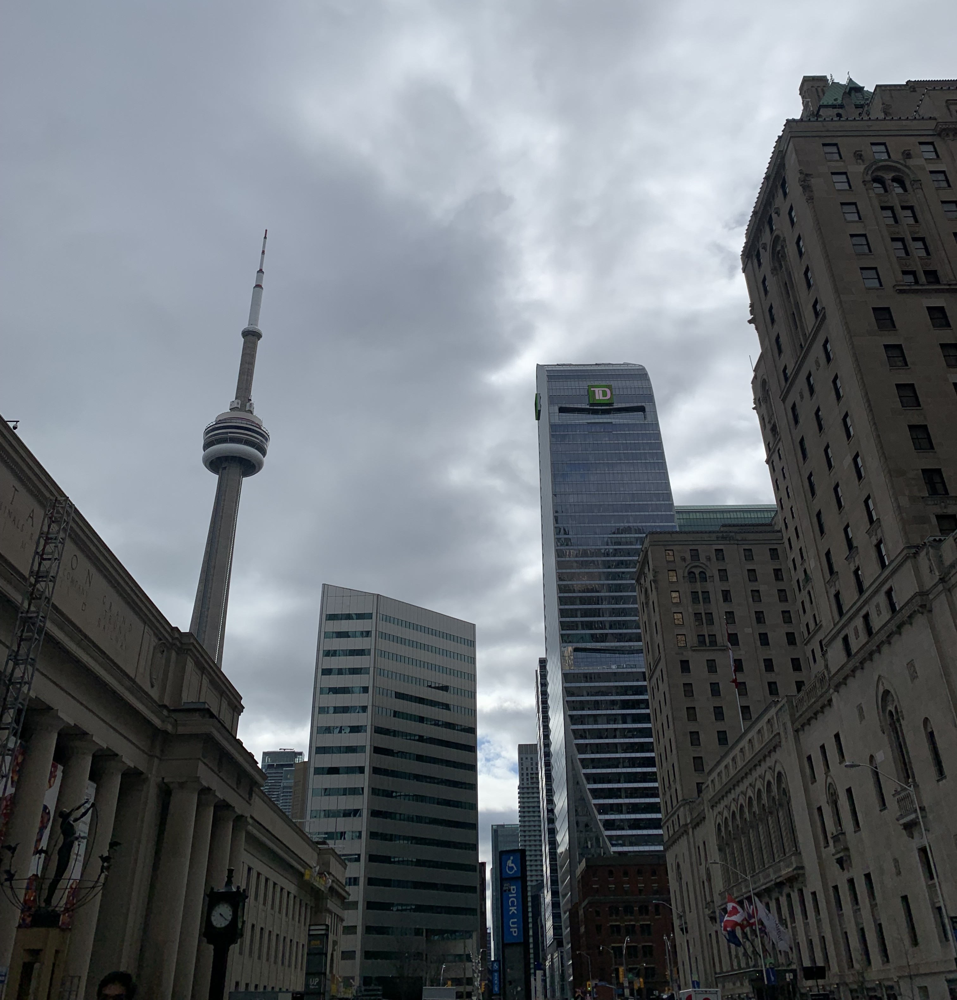
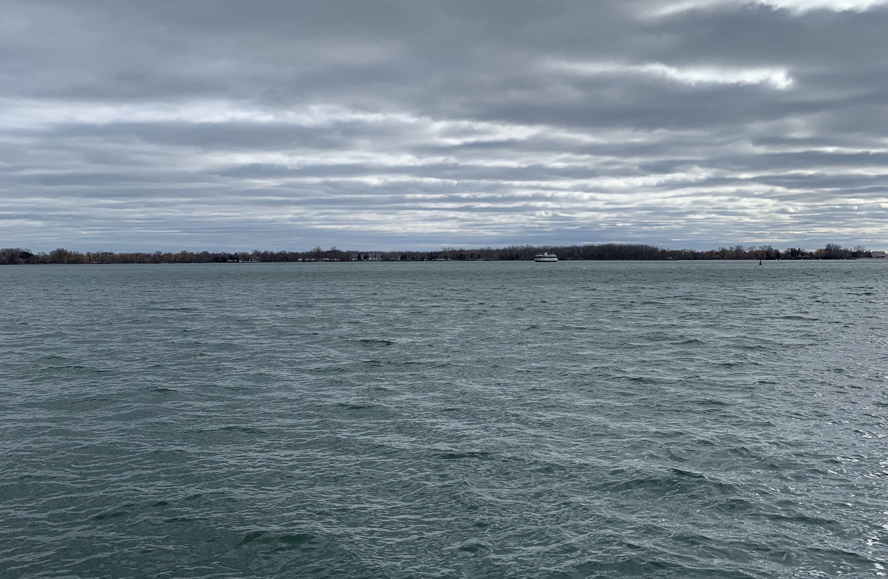
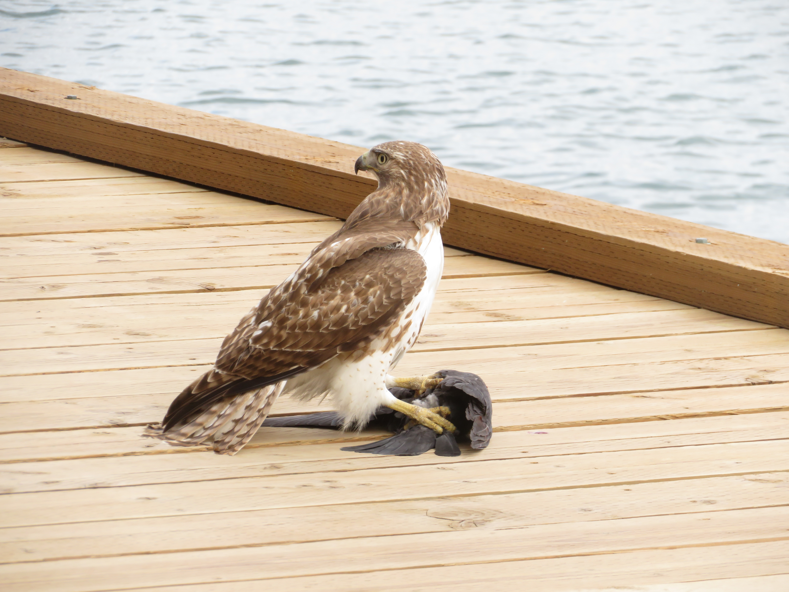

CN Tower

CN Tower View
Located in the Ontario Province, Toronto is the beating heart of Canada and one of the most beautiful cities in the entire world. Centered around the 553.3 meters tall CN Tower, the city has so many cool things to see and do. Its skyline is one of the most iconic and one of the best in the world, with many skyscrapers rising high up from the shores of Lake Ontario.

CN Tower

Lakefront
By far the best place to visit in the city and the main place I visited was the city's downtown harbour. The area around Toronto Harbour is stunning, surrounded by a sea of skyscrapers towering above, making for a nice stroll around this beautiful city.
CN Tower
CN Tower View
The wildlife by the Toronto Harbour was also amazing. There were countless small birds and some beautiful Mute Swans near the piers when I visited. The highlight though, had to be seeing a Red-Tailed Hawk on the pier of the harbour. The hawk was grabbing and feeding on a crow on the boardwalk, which was so cool to watch up close.

Red Tailed Hawk

Red Tailed Hawk

Mute Swan